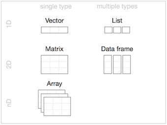
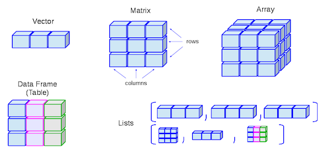
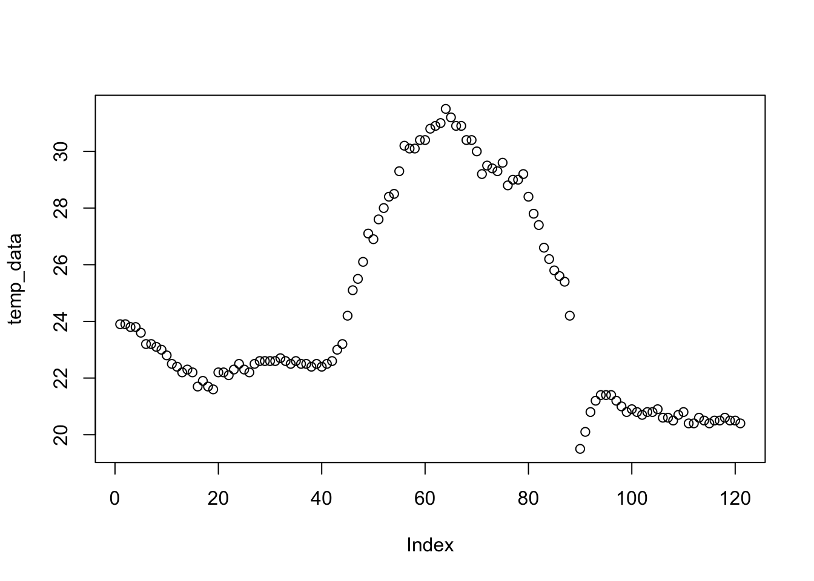

R Language
R Language Part 1
Scientific Calculator
Class
Vectors
Matrices
Arrays
Scientific Calculator
?Arithmetic or help(“Arithmetic”)
- ^ (exponentiation)
- sqrt (the square root)
- log (logarithm)
- exp (exponential)
- D (derivative)
- integrate (integration)
- sin (sinus)
- cos (cosinus)
- sum (sum)
- mean (mean)
example(integer) , demo(graphics)
Scientific Calculator
2+3## [1] 514/6## [1] 2.33333314/6+5## [1] 7.33333314/(6+5)## [1] 1.2727273^2## [1] 92^3## [1] 8sqrt(x=9)## [1] 3sqrt(x=5.311)## [1] 2.304561Scientific Calculator

f <- expression(x^2+3*x) # you can check ?expression
D(f,'x') # Calculate (first) derivative of f with respect to x## 2 * x + 3Class
- Data Structures
- Data Types
Data Structures (R-Objects)
- (Atomic) Vectos
- Matrices
- Array
- Data Frame
- List
Data Structures (R-Objects)

Data Structures (R-Objects)

- Homogeneous: Vector(1d), Matrix(2d), Array(nd)
- Heterogeneous: List(1d?), Data frame(2d)
Data Types
- Numeric (Double)
- Integer
- Complex
- Logical
- Character
- Special Values
- Date/Time
Variables are defined with different data types
Also
Variables are assigned with R-Objects
—> The data type of the R-object
Data Types - Numeric (Double)
Any number with (or without) a decimal point.
a <- 3.8
a## [1] 3.8class(a)## [1] "numeric"b <- 4
b## [1] 4class(b)## [1] "numeric"c <- sqrt(2)
c## [1] 1.414214class(c)## [1] "numeric"d <- 3.5:9.5
d## [1] 3.5 4.5 5.5 6.5 7.5 8.5 9.5class(d)## [1] "numeric"class(1)## [1] "numeric"Data Types - Integer
Kind of a sub-class of the numeric class.
The suffix L tells R to store this as an integer.
a <- 7
a## [1] 7class(a)## [1] "numeric"b <- 7L
b## [1] 7class(b)## [1] "integer"c <- 5:9
c## [1] 5 6 7 8 9class(c)## [1] "integer"d <- 5.1:9.1
d## [1] 5.1 6.1 7.1 8.1 9.1class(d)## [1] "numeric"class(3.2L)## [1] "numeric"Numeric and Integer
pi
sqrt(2)^2-2
Numeric (64-bit) -> big memery and calculations
Integer (32-bit) -> Constant lalues like ID
6 digits after decimal
16 significant digits
Data Types - Complex
Complex: x2 = −1 (imaginary number)
a <- i # This will give errorb <- 1i
b## [1] 0+1iclass(b)## [1] "complex"class(1+2i)
class(2iL)try
class(((1i^2)^2))## [1] "complex"is.complex((1i^2)^2)## [1] TRUEisTRUE(is.complex((1i^2)^2))## [1] TRUE(1i^2)^2## [1] 1+0iData Types - Logical
TRUE or FALSE - Logical Operators
- < (less than)
- <= (less than or equal to)
- > (greater than)
- >= (greater than or equal to)
- == (exactly equal to)
- != (not equal to)
- !x (Not x)
- x | y (x OR y)
- x & y (x AND y)
- isTRUE(x) (test if X is TRUE)
Data Types - Logical
5 < 9## [1] TRUE5 < -9## [1] FALSEa <- 5 < -9
class(a)## [1] "logical"1:10## [1] 1 2 3 4 5 6 7 8 9 101:10 >= 5## [1] FALSE FALSE FALSE FALSE TRUE TRUE TRUE TRUE TRUE TRUEx <- 1:10 >= 5
1:10 < 2## [1] TRUE FALSE FALSE FALSE FALSE FALSE FALSE FALSE FALSE FALSEy <- 1:10 < 2
x | y## [1] TRUE FALSE FALSE FALSE TRUE TRUE TRUE TRUE TRUE TRUEz <- x | y
z## [1] TRUE FALSE FALSE FALSE TRUE TRUE TRUE TRUE TRUE TRUE!z## [1] FALSE TRUE TRUE TRUE FALSE FALSE FALSE FALSE FALSE FALSEclass(z)## [1] "logical"b <- 4:8
b## [1] 4 5 6 7 8c <- 7:11
c## [1] 7 8 9 10 11b != c## [1] TRUE TRUE TRUE TRUE TRUEd <- 5:12
b != d## Warning in b != d: longer object length is not a multiple of shorter object
## length## [1] TRUE TRUE TRUE TRUE TRUE TRUE TRUE TRUEData Types - Character
Data type consists of letters or words. String.
single quotes: ‘…’ or double quotes " … "
name <- emir # This will give an errorname <- 'emir'
name## [1] "emir"class(name)## [1] "character"a <- 23
a## [1] 23class(a)## [1] "numeric"b <- '23'
b## [1] "23"class(b)## [1] "character"print('hello')## [1] "hello"cat('hello')## helloclass(print('hello'))## [1] "hello"## [1] "character"class(cat("hello"))## hello## [1] "NULL"Special Values
Null, Infinity, Not a Number, Not Available
NULL # Null (“empty” entity)## NULLInf # Infinity## [1] Infclass(Inf)## [1] "numeric"Inf*-9## [1] -Infis.finite(Inf)## [1] FALSE1/0## [1] InfNaN # Not a Number## [1] NaNclass(NaN)## [1] "numeric"-Inf+Inf## [1] NaNis.nan(5^(-Inf/Inf))## [1] TRUE0/0## [1] NaNNA # Not Available (“missing” entity)## [1] NAclass(NA)## [1] "logical"Data Types - Date/Time
Sys.Date( ) ## [1] "2019-11-29"date()## [1] "Fri Nov 29 18:11:37 2019"date <- "2007-06-22"
class(date)## [1] "character"date1 <- as.Date(date) # Coercion
class(b) ## [1] "character"date2 <- as.Date("2004-02-13")
date1 - date2## Time difference of 1225 daysdate_difference <- date1 - date2
class(date_difference)## [1] "difftime"%d day as a number (0-31) 01-31
%a abbreviated weekday Mon
%A unabbreviated weekday Monday
%m month (00-12) 00-12
%b abbreviated month Jan
%B unabbreviated month January
%y 2-digit year 07
%Y 4-digit year 2007today <- Sys.Date()
format(today, format="%B %d %Y")## [1] "November 29 2019"Coercion

Coercion

3## [1] 3class(3)## [1] "numeric"as.numeric(3)## [1] 3as.character(3)## [1] "3"as.logical(3)## [1] TRUEFALSE## [1] FALSEclass(FALSE)## [1] "logical"as.character(FALSE)## [1] "FALSE"as.numeric(FALSE)## [1] 0as.numeric(TRUE)## [1] 1TRUE+TRUE## [1] 2class(TRUE+TRUE)## [1] "integer"Class - Data Structure
Data Structures
- Vector
- Array
- Matrix
- Data Frame
- List
(Atomic) Vector
The simplest data structure in R

Vectors are a list-like structure that contain items of the same data type.
spring_month <- "April"
spring_month## [1] "April"spring_months <- c("March", "April","May","June")
spring_months## [1] "March" "April" "May" "June"class(spring_months)## [1] "character"c means “combine”
(Atomic) Vector
myvec <- c(1, 3, 1, 42)
a <- 35
myvec2 <- c(3L, 3.45, 1e+03, 64^0.5, 2+(3-1.1)/9.44, a)
myvec3 <- c(myvec, myvec2)
myvec3## [1] 1.000000 3.000000 1.000000 42.000000 3.000000
## [6] 3.450000 1000.000000 8.000000 2.201271 35.000000x <- c("all", "b", "olive")Length of a vector, length(vector_name)
length(x)## [1] 3Indexing element, vector_name[element_position]
x[2]## [1] "b"Manipulating element of vector, assigning arrow
x[2] <- "b_new"
x## [1] "all" "b_new" "olive"Note: In R, counting elements start position 1, not 0.
(Atomic) Vector
y <- c( 1.2, 5, "Rt", "2000", 20, 4905)
y [0]## character(0)class(y)## [1] "character"y## [1] "1.2" "5" "Rt" "2000" "20" "4905"Sequences
7:16.4## [1] 7 8 9 10 11 12 13 14 15 16a <- 7:16
a## [1] 7 8 9 10 11 12 13 14 15 16seq(from=7,to=16,by=3)## [1] 7 10 13 16seq(50,150,25)## [1] 50 75 100 125 150seq(50,149,25)## [1] 50 75 100 125seq(from=3,to=27,length.out=40)## [1] 3.000000 3.615385 4.230769 4.846154 5.461538 6.076923 6.692308
## [8] 7.307692 7.923077 8.538462 9.153846 9.769231 10.384615 11.000000
## [15] 11.615385 12.230769 12.846154 13.461538 14.076923 14.692308 15.307692
## [22] 15.923077 16.538462 17.153846 17.769231 18.384615 19.000000 19.615385
## [29] 20.230769 20.846154 21.461538 22.076923 22.692308 23.307692 23.923077
## [36] 24.538462 25.153846 25.769231 26.384615 27.000000Round
3/2## [1] 1.5round(3/2)## [1] 2round(5.1)## [1] 5round(pi)## [1] 3(Atomic) Vector
Repetition
rep(x=1, times=4)## [1] 1 1 1 1rep(x=c(3, 62, 8),times=3)## [1] 3 62 8 3 62 8 3 62 8rep(x=c(3, 62, 8),times=3,each=2)## [1] 3 3 62 62 8 8 3 3 62 62 8 8 3 3 62 62 8 8Sorting
sort(x=c(2.5, -1, -10, 3.44)) # decreasing=FALSE (default)## [1] -10.00 -1.00 2.50 3.44sort(x=c(2.5, -1,- 10, 3.44), decreasing=TRUE)## [1] 3.44 2.50 -1.00 -10.00Random - Uniform Distribution
runif(15, min = 20, max = 45)## [1] 21.40378 23.96728 36.23522 25.25350 44.33071 25.17595 39.13315
## [8] 43.67434 26.13771 20.17746 32.48731 20.60877 44.58586 44.92039
## [15] 31.33987runif(15, 20, 45)## [1] 30.81824 32.49394 37.52873 23.32280 37.71817 22.16804 40.66727
## [8] 43.15705 39.03473 20.76975 43.30605 35.58218 37.96398 25.35089
## [15] 34.61207runif(25, 60, 50)## Warning in runif(25, 60, 50): NAs produced## [1] NaN NaN NaN NaN NaN NaN NaN NaN NaN NaN NaN NaN NaN NaN NaN NaN NaN
## [18] NaN NaN NaN NaN NaN NaN NaN NaNRandom variable can be saved
set.seed(1)
runif(15, 20, 45)## [1] 26.63772 29.30310 34.32133 42.70519 25.04205 42.45974 43.61688
## [8] 36.51994 35.72785 21.54466 25.14936 24.41392 37.17557 29.60259
## [15] 39.24604Matrices
Vectors indexed using two indices instead of one.


n <- runif(9,1,100)
n## [1] 50.27222 72.04423 99.19870 38.62348 77.96708 93.53582 22.00211 65.51570
## [9] 13.42995matrix(n, nrow = 3, ncol = 3)## [,1] [,2] [,3]
## [1,] 50.27222 38.62348 22.00211
## [2,] 72.04423 77.96708 65.51570
## [3,] 99.19870 93.53582 13.42995n2 <- runif(10,1,100)
matrix(n2, nrow = 3, ncol = 3)## Warning in matrix(n2, nrow = 3, ncol = 3): data length [10] is not a sub-
## multiple or multiple of the number of rows [3]## [,1] [,2] [,3]
## [1,] 27.454846 38.85641 48.72593
## [2,] 39.225295 87.09939 60.35702
## [3,] 2.325643 34.69455 49.86059Matrices
x <- as.numeric(seq(10,120,10))
mx <- matrix(x,3,4) # n, nrow, ncol
mx## [,1] [,2] [,3] [,4]
## [1,] 10 40 70 100
## [2,] 20 50 80 110
## [3,] 30 60 90 120class(mx)## [1] "matrix"class(mx[1])## [1] "numeric"typeof(mx)## [1] "double"mx[1,]## [1] 10 40 70 100mx[,2]## [1] 40 50 60mx[,2:4]## [,1] [,2] [,3]
## [1,] 40 70 100
## [2,] 50 80 110
## [3,] 60 90 120mx_new <- mx[,2:4]
mx## [,1] [,2] [,3] [,4]
## [1,] 10 40 70 100
## [2,] 20 50 80 110
## [3,] 30 60 90 120mx[2,3] <- "rose"
mx## [,1] [,2] [,3] [,4]
## [1,] "10" "40" "70" "100"
## [2,] "20" "50" "rose" "110"
## [3,] "30" "60" "90" "120"class(mx)## [1] "matrix"typeof(mx)## [1] "character"mx_new <- as.numeric(mx)## Warning: NAs introduced by coercionmx_new## [1] 10 20 30 40 50 60 70 NA 90 100 110 120class(mx_new)## [1] "numeric"typeof(mx_new)## [1] "double"Matrices


m_mycol <- matrix(c(1, 2, 3, 4, 5, 6),
nrow = 2,
ncol = 3,
byrow = FALSE) # Default
m_mycol ## [,1] [,2] [,3]
## [1,] 1 3 5
## [2,] 2 4 6m_byrow <- matrix(c(1, 2, 3, 4, 5, 6),
nrow = 2,
ncol = 3,
byrow = TRUE)
m_byrow ## [,1] [,2] [,3]
## [1,] 1 2 3
## [2,] 4 5 6t(m_byrow)## [,1] [,2]
## [1,] 1 4
## [2,] 2 5
## [3,] 3 6length(mx)## [1] 12dim(mx)## [1] 3 4Arrays

x <- 1:24
x## [1] 1 2 3 4 5 6 7 8 9 10 11 12 13 14 15 16 17 18 19 20 21 22 23
## [24] 24array(x, dim = c(4,3,2)) # raw, col, level## , , 1
##
## [,1] [,2] [,3]
## [1,] 1 5 9
## [2,] 2 6 10
## [3,] 3 7 11
## [4,] 4 8 12
##
## , , 2
##
## [,1] [,2] [,3]
## [1,] 13 17 21
## [2,] 14 18 22
## [3,] 15 19 23
## [4,] 16 20 24arr <- array(x, c(4,3,2))
class(arr)## [1] "array"typeof(arr)## [1] "integer"Arrays

arr <- array(data=10:33,dim=c(3,4,2))
arr## , , 1
##
## [,1] [,2] [,3] [,4]
## [1,] 10 13 16 19
## [2,] 11 14 17 20
## [3,] 12 15 18 21
##
## , , 2
##
## [,1] [,2] [,3] [,4]
## [1,] 22 25 28 31
## [2,] 23 26 29 32
## [3,] 24 27 30 33arr[2,2,1]## [1] 14arr[-1,,]## , , 1
##
## [,1] [,2] [,3] [,4]
## [1,] 11 14 17 20
## [2,] 12 15 18 21
##
## , , 2
##
## [,1] [,2] [,3] [,4]
## [1,] 23 26 29 32
## [2,] 24 27 30 33Practice
Scientific Calculator 
Practice
Scientific Calculator
Problem: Compute double, triple or higher order integrals


install.packages("cubature")
library(cubature)
f <- function(x) 1
adaptIntegrate(f,lowerLimit = c(0,0,0),upperLimit = c(4,4,4))$integral
[1] XXPractice
Create a Function
Problem: Take a sample belonged to population and sum
pop <- 1:6 # This is my population
samp <- sample(pop, size = 2) # This is my sample, I choose two var.
sum(samp)## [1] 9pop## [1] 1 2 3 4 5 6samp## [1] 5 4I want to create a new function named roll()
roll <- function() {
pop <- 1:6
samp <- sample(pop, size = 2)
sum(samp)
}roll()## [1] 6Practice
Create a Function
Problem: What if we removed one line of code from our function and changed the name pop to box ?
roll2 <- function() {
samp <- sample(box, size = 2)
sum(samp)
}roll2() # This will give errorRe-create function
roll2 <- function(box) {
samp <- sample(box, size = 2)
sum(samp)
}roll2(box = 1:4)## [1] 5roll2(box = 1:6)## [1] 9roll2(1:20)## [1] 27Practice
Create a Function

- You can add new options
- { } and () are important
Practice
- Print your name as a character string.
- Print your age as a numeric type.
- Print your age as a character type.
print()
- Create a numeric vector with your favorite numbers.
- Check the lenght of the vector, lenght().
- Choose the last element (indexing) with [].
- Create 4 × 2 matrice, fill with numbers
- Delete first row.
- Generate 48 random number and assign, runif().
- Create and store a three-dimensional array with six layers of a 4 × 2 matrice, and fill it with these random numbers.
Summary
- Arithmetic Operators ( +, -, /, x )
- Logical Operators ( <, >, ==, != ….)
- Special Values ( NULL, Nan, NA, Inf)
- Vector, Matrice, Array (1d and Homogeneous)
- class(), print(), seq(), runif()
- c(), []
- ?xxx or help(xxx)
- install.packages(), library()
R Language - Part 1 & Part 2 (REPEAT)
- Basic Math, Assigment, Comment
- Data Types - Classes
- Numeric
- Integer
- Logical
- Character
- Data Structures - Objects
- Vector
- Matrice
- Array
- Data Frame
- List
- Special Values, Attributes
Getting Started
- Assignment; <-
- Comment; #
- Help; ?func .or. help(func)
- Install Packages; install.packages()
- Call from Library; library()
- Basic Math;
- addition; +
- subtraction; -
- multiplication;
* - division; /
- exponentiation; ^
- the square root; sqrt
Basic Math
Basic Math
a <- 2.3
(6*a+42)/(3^(4.2-3.62))## [1] 29.50556isTRUE((6*a+42)/(3^(4.2-3.62))==29.50556)## [1] FALSEScientific Math
Problem: Compute double, triple or higher order integrals
Scientific Math
Problem: Compute double, triple or higher order integrals
Scientific Math
Problem: Compute double, triple or higher order integrals
# install.packages("cubature")
library(cubature)
cube_f <- function(x) 1
adaptIntegrate(cube_f,lowerLimit = c(0,0,0),upperLimit = c(4,4,4))## $integral
## [1] 64
##
## $error
## [1] 7.105427e-15
##
## $functionEvaluations
## [1] 33
##
## $returnCode
## [1] 0Data Types - Classes
- Numeric
# Any number with (or without) a decimal point.
a <- 3- Integer
# Sub-class of the numeric class. The suffix L tells R to store.
a <- 3L- Logical
# TRUE or FALSE - Logical Operators. < , > , == , >= , <= , != ...
a <- 3<2- Character
# Data type consists of letters or words. String. with quotes: " … "
a <- "3"is.XXX() and class()
Data Types - Classes
name1 <- emir
name1 <- "emir"
name2 <- name1
name3 <- "name1"
number1 <- 32
number2 <- "32"
number3 <- 1:10
number4 <- seq(1,10)
var1 <- TRUE
var2 <- "TRUE"
answer1 <- is.logical(var1)
answer2 <- var1 + answer1 / 3surname1 <- "toker"
print(name1)
print(surname1)
print(name1,surname1)is.XXX() and class()
Data Structures - (Atomic) Vector
name <- "emir"
surname <- "toker"
print(c(name,surname)) # c means “combine”Vector : The simplest data structure in R
name <- "emir"
surname <- "toker"
name_surname <- c(name,surname)
length(name_surname)
print(c("21","21"))
print(c("21",21))
print(c(21,21)) Data Structures - (Atomic) Vector
spring_months <- c("March", "April","May","June")
spring_months
length(spring_months)
dim(spring_months)
spring_months[1]
spring_months[3:4]
str(spring_months) # Structure
substr(spring_months, start = 1, stop = 3) # Substrings
strsplit(spring_months,"")
gsub("a", "A", spring_months) # Matching and Replacement?str , ?substr , ?strsplit , ?gsub
Data Structures - Matrice
Vectors indexed using two indices instead of one.
[ row, col ]
a <- c(1:3)
# str(a) and dim(a) and length(a)
b <- matrix(1:3, nrow = 1, ncol = 3)
# str(b) and dim(b) and length(b)Data Structures - Matrix
a <- c(1:3)
b <- matrix(1:3, nrow = 1, ncol = 3)a <- c(1:3)
b <- matrix(1:3, nrow = 1, ncol = 3)
a## [1] 1 2 3b## [,1] [,2] [,3]
## [1,] 1 2 3c <- matrix(1:9, nrow = 3, ncol = 3)c <- matrix(1:9, nrow = 3, ncol = 3)
c## [,1] [,2] [,3]
## [1,] 1 4 7
## [2,] 2 5 8
## [3,] 3 6 9d <- matrix(1:9, nrow = 3, ncol = 3, byrow = TRUE)d <- matrix(1:9, nrow = 3, ncol = 3, byrow = TRUE)
d## [,1] [,2] [,3]
## [1,] 1 2 3
## [2,] 4 5 6
## [3,] 7 8 9Data Structures - Matrix
my_mat <- matrix(runif(n=20, min=0, max=100), nrow = 4, ncol = 5)my_mat <- matrix(runif(n=20, min=0, max=100), nrow = 4, ncol = 5)
my_mat## [,1] [,2] [,3] [,4] [,5]
## [1,] 65.08705 8.424691 34.66835 86.43395 43.46595
## [2,] 25.80168 87.532133 33.37749 38.99895 71.25147
## [3,] 47.85452 33.907294 47.63512 77.73207 39.99944
## [4,] 76.63107 83.944035 89.21983 96.06180 32.53522add <- matrix(seq(from=10, to=60, by=10), nrow = 2, ncol = 3)add <- matrix(seq(from=10, to=60, by=10), nrow = 2, ncol = 3)
add## [,1] [,2] [,3]
## [1,] 10 30 50
## [2,] 20 40 60my_mat[2:3,2:4] <- addmy_mat[2:3,2:4] <- add
my_mat## [,1] [,2] [,3] [,4] [,5]
## [1,] 65.08705 8.424691 34.66835 86.43395 43.46595
## [2,] 25.80168 10.000000 30.00000 50.00000 71.25147
## [3,] 47.85452 20.000000 40.00000 60.00000 39.99944
## [4,] 76.63107 83.944035 89.21983 96.06180 32.53522Data Structures - Array
arr <- array(1:24, dim = c(4,3,2)) #raw,col,levelstr(arr)## int [1:4, 1:3, 1:2] 1 2 3 4 5 6 7 8 9 10 ...# dim(arr)
# length(arr)x <- 1:24x <- 1:24
x## [1] 1 2 3 4 5 6 7 8 9 10 11 12 13 14 15 16 17 18 19 20 21 22 23
## [24] 24arr <- array(x, dim = c(4,3,2)) #raw,col,levelarr <- array(x, dim = c(4,3,2)) # raw, col, level
arr## , , 1
##
## [,1] [,2] [,3]
## [1,] 1 5 9
## [2,] 2 6 10
## [3,] 3 7 11
## [4,] 4 8 12
##
## , , 2
##
## [,1] [,2] [,3]
## [1,] 13 17 21
## [2,] 14 18 22
## [3,] 15 19 23
## [4,] 16 20 24Data Structures - Array
[ row, col, level ]
Data Structures - Array
arr <- array(data=10:30,dim=c(2,5,2))arr## , , 1
##
## [,1] [,2] [,3] [,4] [,5]
## [1,] 10 12 14 16 18
## [2,] 11 13 15 17 19
##
## , , 2
##
## [,1] [,2] [,3] [,4] [,5]
## [1,] 20 22 24 26 28
## [2,] 21 23 25 27 29arr[2,2:4,1:2]## [,1] [,2]
## [1,] 13 23
## [2,] 15 25
## [3,] 17 27arr[1,1:5,2]## [1] 20 22 24 26 28Data Structures - Array
array <- array(data=seq(2,144,2),dim=c(3,6,4))array## , , 1
##
## [,1] [,2] [,3] [,4] [,5] [,6]
## [1,] 2 8 14 20 26 32
## [2,] 4 10 16 22 28 34
## [3,] 6 12 18 24 30 36
##
## , , 2
##
## [,1] [,2] [,3] [,4] [,5] [,6]
## [1,] 38 44 50 56 62 68
## [2,] 40 46 52 58 64 70
## [3,] 42 48 54 60 66 72
##
## , , 3
##
## [,1] [,2] [,3] [,4] [,5] [,6]
## [1,] 74 80 86 92 98 104
## [2,] 76 82 88 94 100 106
## [3,] 78 84 90 96 102 108
##
## , , 4
##
## [,1] [,2] [,3] [,4] [,5] [,6]
## [1,] 110 116 122 128 134 140
## [2,] 112 118 124 130 136 142
## [3,] 114 120 126 132 138 144array[1,1,1:4]
array[1,1,]
array[1,1,4:1]
array[1,1,c(1:4!=2)]
array[1,1,2]
array[1,1,which(x==2)]
array[1,1,which(x<=2)]
array[1,1,2:4]
array[1,1,-1]
array[1,1,c(-1,-2)]
array[1,2:5,2]
array[1,c(2,3,4,5),2]
array[1,c(2,5),2]array[1,c(2,5),2:3]
array[,c(2,5),2:3][ row, col, level ]
Data Structures (R-Objects)
Data Structures (R-Objects)
BONUS - Data Structures - Factor
Factors are a special variable type for storing categorical variables.
They sometimes behave like strings, and sometimes like integers.
gender = c(male", "female", "male", "male", "female")
gender
class(gender)
str(gender)
gender[2]
gender_factor <- factor(c("male", "female", "male", "male", "female"))
gender_factor
class(gender_factor)
str(gender_factor)
gender_factor[2]Data Structures - Data Frame

- Each element is of the same length, like a matrix.
- A column can have different types.
- BUT, all the elements within a column are the same type.
Data Structures - Data Frame
person=c("Peter","Lois","Meg","Chris","Stewie")
age=c(42,40,17,14,1)
sex=factor(c("M","F","F","M","M"))
married=c(TRUE,TRUE,FALSE,FALSE,FALSE)
den <- matrix(c(person,married),5,2)
den <- matrix(c(age,married),5,2)
den <- matrix(c(person,age),5,2)
den <- matrix(c(person,sex),5,2)no need to Combine
df <- data.frame(person,married)
df
class(df)
dim(df)
length(df)
str(df)
df$
df$person
as.character(df$person)
df <- data.frame(person,age,sex,married,stringsAsFactors=FALSE)
df
str(df)Data Structures - Data Frame
person="Brian"
age=7
sex=factor("M")
married=FALSE
new_record_row <- data.frame(person,age,sex,married)
new_df <- rbind(df,newrecord) # Combine R Objects by Rows
surname=c("Yilmaz","Zeki","Sahin","Caliskan","Uslu","Guzel")
new_record_col <- data.frame(surname, stringsAsFactors=FALSE)
new_df2 <- cbind(new_df, new_record_col) # Combine R Objects by Columns
new_df2
new_df2[c(5,6),]
new_df2[c(5,6),] <- new_df2[c(6,5),]new_df2[5]
a <- 9:14
a
a[2]
a[2,]
b <- matrix(a,2,3)
b
b[2]
b[2,]Data Structures - Data Frame
new_df2
new_df2[1]
length(new_df2[1])
dim(new_df2[1])
new_df2[[1]]
length(new_df2[[1]])
dim(new_df2[[1]])
new_df2[[1]][2]
new_df2[[1]][2:5]
new_df2$person[2]
new_df2$person[2:5]new_df2
new_df2[2:3,1:5]
new_df2[2:3,]
new_df2[2,1]
new_df2[2:2,1:1]
attributes(new_df2)Data Structures - List
 
- Lists are like atomic vectors because they group data into a one-dimensional set.
- Lists are like data frame because they can group different types of data.
- BUT, the length of elements is NOT important.
Data Structures - List


matrix <- matrix(data=1:4,nrow=2,ncol=2)
vector <- c(T,F,T,T)
var <- "hello"
data_frame <- new_df2
list <- list(matrix,vector,var,data_frame)
class(list)
str(list)
dim(list)
length(list)R Language - Part 3
Read
Write
Plot
Read
library(help="datasets")list.files("/Users/emirtoker/Desktop/Dersler/Memurluk/Software_Tools_for_Earth_&_Environmental_Science/Software_Tools_R_Github/Presentation")file.choose()read.table(file = "18397_Cekmekoy_Omerli_15dk.txt")
read.table(file = "18397_Cekmekoy_Omerli_15dk.txt",
header=TRUE, sep=";")
read.table(file = "18397_Cekmekoy_Omerli_15dk.txt",
header=TRUE, sep=";", na.strings="-9999")
mydata_txt <- read.table(file = "18397_Cekmekoy_Omerli_15dk.txt",
header=TRUE,
sep=";",
na.strings="-9999")
str(mydata_txt)mydata_csv <- read.csv(file="18397_Cekmekoy_Omerli.csv",
header=TRUE,
na.strings="-9999")
str(mydata_csv)
Read and Write
url <- "https://web.itu.edu.tr/tokerem/18397_Cekmekoy_Omerli_15dk.txt"
urldata_txt <- read.table(url,
header=TRUE,
sep=";",
na.strings="-9999")Write .TXT and .CSV
write.table(x=urldata_txt,file="somenewfile.txt")
write.table(x=urldata_txt,file="somenewfile.txt",
sep=";",na="-9999",quote=FALSE,row.names=FALSE)
new_df2
write.table(x=new_df2,file="dffile.txt",
sep=";",na="-9999",quote=FALSE,row.names=FALSE)
write.table(x=new_df2,file="dffile.csv",
sep=";",na="-9999",quote=FALSE,row.names=FALSE)
Plot
foo <- c(1.1,2,3.5,3.9,4.2)
bar <- c(2,2.2,-1.3,0,0.2)
plot(foo,bar)- type the supplied coordinates (for example, as stand-alone points or joined by lines or both dots and lines).
- main, xlab, ylab Options to include plot title, the horizontal axis label, and the vertical axis label, respectively.
- col Color (or colors) to use for plotting points and lines.
- lty Stands for line type. (for example, solid, dotted, or dashed).
- lwd This controls the thickness of plotted lines.
- xlim, ylim limits for the horizontal range and vertical range (respectively)
Plot
plot(foo,bar)
plot(foo,bar,type="l")
plot(foo,bar,type="b",main="My lovely plot",xlab="x axis label", ylab="location y")
plot(foo,bar,type="b",main="My lovely plot",xlab="",ylab="",col="red")x <- 1:20
y <- c(-1.49,3.37,2.59,-2.78,-3.94,-0.92,6.43,8.51,3.41,-8.23,
-12.01,-6.58,2.87,14.12,9.63,-4.58,-14.78,-11.67,1.17,15.62)
plot(x,y,type="n",main="")
abline(h=c(-5,5),col="red",lty=2,lwd=2)
segments(x0=c(5,15),y0=c(-5,-5),x1=c(5,15),y1=c(5,5),col="red",lty=3,
lwd=2)
points(x[y>=5],y[y>=5],pch=4,col="darkmagenta",cex=2)
points(x[y<=-5],y[y<=-5],pch=3,col="darkgreen",cex=2)
points(x[(x>=5&x<=15)&(y>-5&y<5)],y[(x>=5&x<=15)&(y>-5&y<5)],pch=19,
col="blue")
points(x[(x<5|x>15)&(y>-5&y<5)],y[(x<5|x>15)&(y>-5&y<5)])
lines(x,y,lty=4)
arrows(x0=8,y0=14,x1=11,y1=2.5)
text(x=8,y=15,labels="sweet spot")
legend("bottomleft",
legend=c("overall process","sweet","standard",
"too big","too small","sweet y range","sweet x range"),
pch=c(NA,19,1,4,3,NA,NA),lty=c(4,NA,NA,NA,NA,2,3),
col=c("black","blue","black","darkmagenta","darkgreen","red","red"),
lwd=c(1,NA,NA,NA,NA,2,2),pt.cex=c(NA,1,1,2,2,NA,NA))Plot
mydata_txt <- read.table(file = "18397_Cekmekoy_Omerli_15dk.txt",
header=TRUE,
sep=";",
na.strings="-9999")
mydata_txt
plot(mydata_txt$temp, type="l" )Workshop - Midterm Project
- Open a new R notebook
- Go to course home page, (Midterm Project)
- Click Rmd and Open “Midterm_Project.Rmd”
- Copy all code and paste in your R notebook
- Same way, open “18397_Cekmekoy_Omerli_15dk.txt” and paste file in your project directory.
- Start to follow Instructions
R Language - Repeat
- Create/Open R Project or R File
- Basic Math, Assigment, Comment
- Data Types - Classes
- Numeric
- Integer
- Logical
- Character
- Data Structures - Objects
- Vector
- Matrice
- Array
- Data Frame
- List
- Special Values, Attributes
Create/Open R Project or R File
Project
File - New Project - New Directory

Project

New Project
Project

Directory Name - Create Project
NEW Project is Ready

File
File - New File - Script

Basic Math, Assigment, Comment
Arithmetic Operators ( + - * / ^ )
Scientific Math
Assignment Arrow (<-)
a <- 3.8- Comment Lines, Comment Out, Hash (#)
# value <- old_code()
value <- new_code()Data Types - Classes
- Numeric
- Integer
- Logical
- Character
- Complex
- Date
a <- 4
b <- 3:9
c <- 7L
d <- 1i
e <- 5 < -9
f <- "23"
date <- "2007-06-22"
date1 <- as.Date(date)
date2 <- as.Date("2004-02-13")
date1 - date2
## Time difference of 1225 daysCoercion
Data Structures - Objects
Data Structures - Vector
c()
spring_months <- c("March", "April", "May", "June")
spring_months[2] <- "new"
spring_months## [1] "March" "new" "May" "June"myvec1 <- c(1, 3, 1, 42)
a <- 35
myvec2 <- c(3L, myvec1, 1e+03, 64^0.5, 2+(3-1.1)/9.44, a)
myvec2## [1] 3.000000 1.000000 3.000000 1.000000 42.000000 1000.000000
## [7] 8.000000 2.201271 35.000000?lenght ?seq ?round ?rep ?sort ?runif ?set.seed
Data Structures - Matrice
matrix(data = ,nrow = ,ncol = )
data <- runif(9,1,100)
data## [1] 75.951628 21.066533 71.401001 13.047500 25.303363 15.187134 24.723312
## [8] 6.834503 64.586538matrix <- matrix(data, nrow = 3, ncol = 3)
matrix## [,1] [,2] [,3]
## [1,] 75.95163 13.04750 24.723312
## [2,] 21.06653 25.30336 6.834503
## [3,] 71.40100 15.18713 64.586538print(c(length(matrix),dim(matrix)))## [1] 9 3 3Data Structures - Array
array(data = ,dim = )
data <- 1:24
array <- array(data, dim = c(4,3,2)) # raw, col, level
array## , , 1
##
## [,1] [,2] [,3]
## [1,] 1 5 9
## [2,] 2 6 10
## [3,] 3 7 11
## [4,] 4 8 12
##
## , , 2
##
## [,1] [,2] [,3]
## [1,] 13 17 21
## [2,] 14 18 22
## [3,] 15 19 23
## [4,] 16 20 24array[2,2,1] # raw, col, level## [1] 6Data Structures - Factor
gender = c("male", "female", "male", "male", "female")
gender## [1] "male" "female" "male" "male" "female"class(gender)## [1] "character"str(gender)## chr [1:5] "male" "female" "male" "male" "female"gender[2]## [1] "female"Data Structures - Factor
gender_factor <- factor(c("male", "female", "male", "male", "female"))
gender_factor## [1] male female male male female
## Levels: female maleclass(gender_factor)## [1] "factor"str(gender_factor)## Factor w/ 2 levels "female","male": 2 1 2 2 1gender_factor[2]## [1] female
## Levels: female maleData Structures - Data Frame
data.frame(data1,data2,data3…)
person=c("Peter", "Lois", "Meg", "Chris", "Stewie")
age=c(42, 40, 17, 14 ,1)
sex=factor(c("M", "F", "F", "M", "M"))
married=c(TRUE, TRUE, FALSE, FALSE, FALSE)
df <- data.frame(person, age, sex, married)
df## person age sex married
## 1 Peter 42 M TRUE
## 2 Lois 40 F TRUE
## 3 Meg 17 F FALSE
## 4 Chris 14 M FALSE
## 5 Stewie 1 M FALSEstr(df)## 'data.frame': 5 obs. of 4 variables:
## $ person : Factor w/ 5 levels "Chris","Lois",..: 4 2 3 1 5
## $ age : num 42 40 17 14 1
## $ sex : Factor w/ 2 levels "F","M": 2 1 1 2 2
## $ married: logi TRUE TRUE FALSE FALSE FALSEData Structures - Data Frame
data.frame(data1,data2,data3…)
person=c("Peter", "Lois", "Meg", "Chris", "Stewie")
age=c(42, 40, 17, 14 ,1)
sex=factor(c("M", "F", "F", "M", "M"))
married=c(TRUE, TRUE, FALSE, FALSE, FALSE)
df <- data.frame(person ,age, sex, married, stringsAsFactors=FALSE)
df## person age sex married
## 1 Peter 42 M TRUE
## 2 Lois 40 F TRUE
## 3 Meg 17 F FALSE
## 4 Chris 14 M FALSE
## 5 Stewie 1 M FALSEstr(df)## 'data.frame': 5 obs. of 4 variables:
## $ person : chr "Peter" "Lois" "Meg" "Chris" ...
## $ age : num 42 40 17 14 1
## $ sex : Factor w/ 2 levels "F","M": 2 1 1 2 2
## $ married: logi TRUE TRUE FALSE FALSE FALSEData Structures - Data Frame
data.frame(data1,data2,data3…)
df[1]## person
## 1 Peter
## 2 Lois
## 3 Meg
## 4 Chris
## 5 Stewiedf[[1]] # df$person## [1] "Peter" "Lois" "Meg" "Chris" "Stewie"df[[1]][1]## [1] "Peter"Data Structures - List
list(data1,data2,data3…)
matrix <- matrix(data=1:4,nrow=2,ncol=2)
vector <- c(T,F,T,T)
var <- "hello"
data_frame <- data.frame(person ,age, sex, married, stringsAsFactors=FALSE)
list <- list(matrix,vector,var,data_frame)
list## [[1]]
## [,1] [,2]
## [1,] 1 3
## [2,] 2 4
##
## [[2]]
## [1] TRUE FALSE TRUE TRUE
##
## [[3]]
## [1] "hello"
##
## [[4]]
## person age sex married
## 1 Peter 42 M TRUE
## 2 Lois 40 F TRUE
## 3 Meg 17 F FALSE
## 4 Chris 14 M FALSE
## 5 Stewie 1 M FALSESpecial Values, Attributes
Special Values
NA, NaN, NULL, Inf
class(NA) # Not Available (“missing” entity)## [1] "logical"class(NaN) # Not a Number## [1] "numeric"class(NULL) # Null (“empty” entity)## [1] "NULL"class(Inf) # Infinity## [1] "numeric"Attributes
person=c("Peter", "Lois", "Meg", "Chris", "Stewie")
age=c(42, 40, 17, 14 ,1)
sex=factor(c("M", "F", "F", "M", "M"))
married=c(TRUE, TRUE, FALSE, FALSE, FALSE)
data_frame <- data.frame(person ,age, sex, married, stringsAsFactors=FALSE)
data_frame## person age sex married
## 1 Peter 42 M TRUE
## 2 Lois 40 F TRUE
## 3 Meg 17 F FALSE
## 4 Chris 14 M FALSE
## 5 Stewie 1 M FALSEdata_frame[2]## age
## 1 42
## 2 40
## 3 17
## 4 14
## 5 1Attributes
attributes(data_frame)## $names
## [1] "person" "age" "sex" "married"
##
## $class
## [1] "data.frame"
##
## $row.names
## [1] 1 2 3 4 5attr(data_frame,"row.names") <- c("bir", "iki", "uc", "dort","bes")
data_frame## person age sex married
## bir Peter 42 M TRUE
## iki Lois 40 F TRUE
## uc Meg 17 F FALSE
## dort Chris 14 M FALSE
## bes Stewie 1 M FALSEPractice - R Language
Practice - R Language
- Read and assign your csv data (Header or seperator ?). “18397_Cekmekoy_Omerli_15dk.txt”
- Check the class and structure of your new data.
- Take the “Temperature” parameter and assign it as a new variable.
- Plot the “temperature” vector.
- Print minimum temperature and find which element is the minimum in temperature vector.
- change the minimum value with NA and Print.
- Plot the new “temperature” vector.
- Replace these new temperature values with old temperature values located in your data frame.
- Write your data frame as a new csv file.
Practice - R Language
- Read and assign your csv data (Header or seperator ?). “18397_Cekmekoy_Omerli_15dk.txt”
mydata <- read.csv(file = "Presentation/18397_Cekmekoy_Omerli_15dk.txt",
header = TRUE,
sep = ";")
mydata## sta_no year month day hour minutes temp precipitation pressure
## 1 18397 2017 7 26 18 0 23.9 0.00 1003.0
## 2 18397 2017 7 26 18 15 23.9 0.00 1003.1
## 3 18397 2017 7 26 18 30 23.8 0.00 1003.2
## 4 18397 2017 7 26 18 45 23.8 0.00 1003.2
## 5 18397 2017 7 26 19 0 23.6 0.00 1003.2
## 6 18397 2017 7 26 19 15 23.2 0.00 1003.1
## 7 18397 2017 7 26 19 30 23.2 0.00 1003.1
## 8 18397 2017 7 26 19 45 23.1 0.00 1003.1
## 9 18397 2017 7 26 20 0 23.0 0.00 1003.1
## 10 18397 2017 7 26 20 15 22.8 0.00 1003.0
## 11 18397 2017 7 26 20 30 22.5 0.00 1003.0
## 12 18397 2017 7 26 20 45 22.4 0.00 1003.0
## 13 18397 2017 7 26 21 0 22.2 0.00 1003.0
## 14 18397 2017 7 26 21 15 22.3 0.00 1003.0
## 15 18397 2017 7 26 21 30 22.2 0.00 1003.1
## 16 18397 2017 7 26 21 45 21.7 0.00 1003.1
## 17 18397 2017 7 26 22 0 21.9 0.00 1003.2
## 18 18397 2017 7 26 22 15 21.7 0.00 1003.3
## 19 18397 2017 7 26 22 30 21.6 0.00 1003.3
## 20 18397 2017 7 26 22 45 22.2 0.00 1003.4
## 21 18397 2017 7 26 23 0 22.2 0.00 1003.4
## 22 18397 2017 7 26 23 15 22.1 0.00 1003.5
## 23 18397 2017 7 26 23 30 22.3 0.00 1003.4
## 24 18397 2017 7 26 23 45 22.5 0.00 1003.4
## 25 18397 2017 7 27 0 0 22.3 0.00 1003.4
## 26 18397 2017 7 27 0 15 22.2 0.00 1003.2
## 27 18397 2017 7 27 0 30 22.5 0.00 1003.2
## 28 18397 2017 7 27 0 45 22.6 0.00 1003.2
## 29 18397 2017 7 27 1 0 22.6 0.00 1003.3
## 30 18397 2017 7 27 1 15 22.6 0.00 1003.4
## 31 18397 2017 7 27 1 30 22.6 0.00 1003.2
## 32 18397 2017 7 27 1 45 22.7 0.00 1003.2
## 33 18397 2017 7 27 2 0 22.6 0.00 1003.3
## 34 18397 2017 7 27 2 15 22.5 0.00 1003.2
## 35 18397 2017 7 27 2 30 22.6 0.00 1003.2
## 36 18397 2017 7 27 2 45 22.5 0.00 1003.1
## 37 18397 2017 7 27 3 0 22.5 0.00 1003.1
## 38 18397 2017 7 27 3 15 22.4 0.00 1003.0
## 39 18397 2017 7 27 3 30 22.5 0.00 1003.1
## 40 18397 2017 7 27 3 45 22.4 0.00 1003.3
## 41 18397 2017 7 27 4 0 22.5 0.00 1003.4
## 42 18397 2017 7 27 4 15 22.6 0.00 1003.5
## 43 18397 2017 7 27 4 30 23.0 0.00 1003.5
## 44 18397 2017 7 27 4 45 23.2 0.00 1003.5
## 45 18397 2017 7 27 5 0 24.2 0.00 1003.6
## 46 18397 2017 7 27 5 15 25.1 0.00 1003.5
## 47 18397 2017 7 27 5 30 25.5 0.00 1003.4
## 48 18397 2017 7 27 5 45 26.1 0.00 1003.3
## 49 18397 2017 7 27 6 0 27.1 0.00 1003.3
## 50 18397 2017 7 27 6 15 26.9 0.00 1003.3
## 51 18397 2017 7 27 6 30 27.6 0.00 1003.3
## 52 18397 2017 7 27 6 45 28.0 0.00 1003.2
## 53 18397 2017 7 27 7 0 28.4 0.00 1003.1
## 54 18397 2017 7 27 7 15 28.5 0.00 1003.1
## 55 18397 2017 7 27 7 30 29.3 0.00 1003.0
## 56 18397 2017 7 27 7 45 30.2 0.00 1002.9
## 57 18397 2017 7 27 8 0 30.1 0.00 1002.8
## 58 18397 2017 7 27 8 15 30.1 0.00 1002.8
## 59 18397 2017 7 27 8 30 30.4 0.00 1002.8
## 60 18397 2017 7 27 8 45 30.4 0.00 1002.8
## 61 18397 2017 7 27 9 0 30.8 0.00 1002.9
## 62 18397 2017 7 27 9 15 30.9 0.00 1002.8
## 63 18397 2017 7 27 9 30 31.0 0.00 1002.6
## 64 18397 2017 7 27 9 45 31.5 0.00 1002.6
## 65 18397 2017 7 27 10 0 31.2 0.00 1002.6
## 66 18397 2017 7 27 10 15 30.9 0.00 1002.4
## 67 18397 2017 7 27 10 30 30.9 0.00 1002.4
## 68 18397 2017 7 27 10 45 30.4 0.00 1002.3
## 69 18397 2017 7 27 11 0 30.4 0.00 1002.1
## 70 18397 2017 7 27 11 15 30.0 0.00 1001.9
## 71 18397 2017 7 27 11 30 29.2 0.00 1001.9
## 72 18397 2017 7 27 11 45 29.5 0.00 1001.7
## 73 18397 2017 7 27 12 0 29.4 0.00 1001.6
## 74 18397 2017 7 27 12 15 29.3 0.00 1001.3
## 75 18397 2017 7 27 12 30 29.6 0.00 1001.2
## 76 18397 2017 7 27 12 45 28.8 0.00 1001.3
## 77 18397 2017 7 27 13 0 29.0 0.00 1001.1
## 78 18397 2017 7 27 13 15 29.0 0.00 1001.2
## 79 18397 2017 7 27 13 30 29.2 0.00 1001.3
## 80 18397 2017 7 27 13 45 28.4 0.00 1001.5
## 81 18397 2017 7 27 14 0 27.8 0.00 1001.6
## 82 18397 2017 7 27 14 15 27.4 0.00 1001.6
## 83 18397 2017 7 27 14 30 26.6 0.00 1001.5
## 84 18397 2017 7 27 14 45 26.2 0.00 1001.2
## 85 18397 2017 7 27 15 0 25.8 0.00 1001.1
## 86 18397 2017 7 27 15 15 25.6 0.00 1001.0
## 87 18397 2017 7 27 15 30 25.4 0.00 1000.9
## 88 18397 2017 7 27 15 45 24.2 0.00 1001.8
## 89 18397 2017 7 27 16 0 19.2 7.01 1003.7
## 90 18397 2017 7 27 16 15 19.5 15.81 1003.2
## 91 18397 2017 7 27 16 30 20.1 16.06 1003.1
## 92 18397 2017 7 27 16 45 20.8 16.06 1003.7
## 93 18397 2017 7 27 17 0 21.2 17.19 -9999.0
## 94 18397 2017 7 27 17 15 21.4 17.21 1005.6
## 95 18397 2017 7 27 17 30 21.4 18.46 1005.4
## 96 18397 2017 7 27 17 45 21.4 21.21 1005.1
## 97 18397 2017 7 27 18 0 21.2 21.21 1005.1
## 98 18397 2017 7 27 18 15 21.0 21.21 -9999.0
## 99 18397 2017 7 27 18 30 20.8 21.21 1006.3
## 100 18397 2017 7 27 18 45 20.9 21.21 -9999.0
## 101 18397 2017 7 27 19 0 20.8 21.40 1005.7
## 102 18397 2017 7 27 19 15 20.7 21.40 1006.2
## 103 18397 2017 7 27 19 30 20.8 21.60 1003.6
## 104 18397 2017 7 27 19 45 20.8 21.82 1003.7
## 105 18397 2017 7 27 20 0 20.9 21.82 -9999.0
## 106 18397 2017 7 27 20 15 20.6 21.82 -9999.0
## 107 18397 2017 7 27 20 30 20.6 21.82 1005.1
## 108 18397 2017 7 27 20 45 20.5 21.82 1005.6
## 109 18397 2017 7 27 21 0 20.7 21.82 1005.5
## 110 18397 2017 7 27 21 15 20.8 21.82 1005.7
## 111 18397 2017 7 27 21 30 20.4 21.82 1005.6
## 112 18397 2017 7 27 21 45 20.4 21.82 1005.8
## 113 18397 2017 7 27 22 0 20.6 21.82 1005.8
## 114 18397 2017 7 27 22 15 20.5 21.82 1005.9
## 115 18397 2017 7 27 22 30 20.4 21.82 1006.0
## 116 18397 2017 7 27 22 45 20.5 21.82 1005.9
## 117 18397 2017 7 27 23 0 20.5 21.82 1005.9
## 118 18397 2017 7 27 23 15 20.6 21.82 1005.9
## 119 18397 2017 7 27 23 30 20.5 21.82 1006.0
## 120 18397 2017 7 27 23 45 20.5 21.82 1006.0
## 121 18397 2017 7 28 0 0 20.4 21.82 1006.0
## relative_humidity
## 1 94
## 2 95
## 3 96
## 4 96
## 5 96
## 6 97
## 7 97
## 8 98
## 9 98
## 10 98
## 11 98
## 12 99
## 13 99
## 14 99
## 15 99
## 16 99
## 17 99
## 18 99
## 19 99
## 20 100
## 21 100
## 22 100
## 23 100
## 24 100
## 25 100
## 26 100
## 27 100
## 28 100
## 29 100
## 30 100
## 31 100
## 32 100
## 33 100
## 34 100
## 35 100
## 36 100
## 37 100
## 38 100
## 39 100
## 40 100
## 41 100
## 42 100
## 43 100
## 44 100
## 45 100
## 46 97
## 47 84
## 48 82
## 49 79
## 50 78
## 51 78
## 52 76
## 53 76
## 54 75
## 55 73
## 56 65
## 57 57
## 58 60
## 59 53
## 60 52
## 61 51
## 62 51
## 63 50
## 64 53
## 65 52
## 66 57
## 67 58
## 68 59
## 69 60
## 70 61
## 71 65
## 72 66
## 73 67
## 74 66
## 75 68
## 76 70
## 77 68
## 78 69
## 79 69
## 80 71
## 81 72
## 82 72
## 83 77
## 84 79
## 85 80
## 86 82
## 87 84
## 88 79
## 89 99
## 90 100
## 91 100
## 92 100
## 93 100
## 94 100
## 95 100
## 96 100
## 97 100
## 98 100
## 99 100
## 100 100
## 101 100
## 102 100
## 103 100
## 104 100
## 105 100
## 106 100
## 107 100
## 108 100
## 109 100
## 110 100
## 111 100
## 112 100
## 113 100
## 114 100
## 115 100
## 116 100
## 117 100
## 118 100
## 119 100
## 120 100
## 121 100Practice - R Language
- Check the class and structure of your new data.
class(mydata)## [1] "data.frame"str(mydata)## 'data.frame': 121 obs. of 10 variables:
## $ sta_no : int 18397 18397 18397 18397 18397 18397 18397 18397 18397 18397 ...
## $ year : int 2017 2017 2017 2017 2017 2017 2017 2017 2017 2017 ...
## $ month : int 7 7 7 7 7 7 7 7 7 7 ...
## $ day : int 26 26 26 26 26 26 26 26 26 26 ...
## $ hour : int 18 18 18 18 19 19 19 19 20 20 ...
## $ minutes : int 0 15 30 45 0 15 30 45 0 15 ...
## $ temp : num 23.9 23.9 23.8 23.8 23.6 23.2 23.2 23.1 23 22.8 ...
## $ precipitation : num 0 0 0 0 0 0 0 0 0 0 ...
## $ pressure : num 1003 1003 1003 1003 1003 ...
## $ relative_humidity: int 94 95 96 96 96 97 97 98 98 98 ...attributes(mydata)## $names
## [1] "sta_no" "year" "month"
## [4] "day" "hour" "minutes"
## [7] "temp" "precipitation" "pressure"
## [10] "relative_humidity"
##
## $class
## [1] "data.frame"
##
## $row.names
## [1] 1 2 3 4 5 6 7 8 9 10 11 12 13 14 15 16 17
## [18] 18 19 20 21 22 23 24 25 26 27 28 29 30 31 32 33 34
## [35] 35 36 37 38 39 40 41 42 43 44 45 46 47 48 49 50 51
## [52] 52 53 54 55 56 57 58 59 60 61 62 63 64 65 66 67 68
## [69] 69 70 71 72 73 74 75 76 77 78 79 80 81 82 83 84 85
## [86] 86 87 88 89 90 91 92 93 94 95 96 97 98 99 100 101 102
## [103] 103 104 105 106 107 108 109 110 111 112 113 114 115 116 117 118 119
## [120] 120 121Practice - R Language
- Take the “Temperature” parameter and assign it as a new variable.
temp_data <- mydata$temp
temp_data## [1] 23.9 23.9 23.8 23.8 23.6 23.2 23.2 23.1 23.0 22.8 22.5 22.4 22.2 22.3
## [15] 22.2 21.7 21.9 21.7 21.6 22.2 22.2 22.1 22.3 22.5 22.3 22.2 22.5 22.6
## [29] 22.6 22.6 22.6 22.7 22.6 22.5 22.6 22.5 22.5 22.4 22.5 22.4 22.5 22.6
## [43] 23.0 23.2 24.2 25.1 25.5 26.1 27.1 26.9 27.6 28.0 28.4 28.5 29.3 30.2
## [57] 30.1 30.1 30.4 30.4 30.8 30.9 31.0 31.5 31.2 30.9 30.9 30.4 30.4 30.0
## [71] 29.2 29.5 29.4 29.3 29.6 28.8 29.0 29.0 29.2 28.4 27.8 27.4 26.6 26.2
## [85] 25.8 25.6 25.4 24.2 19.2 19.5 20.1 20.8 21.2 21.4 21.4 21.4 21.2 21.0
## [99] 20.8 20.9 20.8 20.7 20.8 20.8 20.9 20.6 20.6 20.5 20.7 20.8 20.4 20.4
## [113] 20.6 20.5 20.4 20.5 20.5 20.6 20.5 20.5 20.4Practice - R Language
Plot the “temperature” vector.
plot(temp_data)
Practice - R Language
- Print minimum temperature and find which element is the minimum in temperature vector.
print(min(temp_data))## [1] 19.2which(temp_data==min(temp_data))## [1] 89which(temp_data==19.2)## [1] 89Practice - R Language
- change the minimum value with NA and Print.
temp_data[which(temp_data==min(temp_data))] <- NA
temp_data[which(temp_data==19.2)] <- NA
temp_data[89] <- NA
print(temp_data)## [1] 23.9 23.9 23.8 23.8 23.6 23.2 23.2 23.1 23.0 22.8 22.5 22.4 22.2 22.3
## [15] 22.2 21.7 21.9 21.7 21.6 22.2 22.2 22.1 22.3 22.5 22.3 22.2 22.5 22.6
## [29] 22.6 22.6 22.6 22.7 22.6 22.5 22.6 22.5 22.5 22.4 22.5 22.4 22.5 22.6
## [43] 23.0 23.2 24.2 25.1 25.5 26.1 27.1 26.9 27.6 28.0 28.4 28.5 29.3 30.2
## [57] 30.1 30.1 30.4 30.4 30.8 30.9 31.0 31.5 31.2 30.9 30.9 30.4 30.4 30.0
## [71] 29.2 29.5 29.4 29.3 29.6 28.8 29.0 29.0 29.2 28.4 27.8 27.4 26.6 26.2
## [85] 25.8 25.6 25.4 24.2 NA 19.5 20.1 20.8 21.2 21.4 21.4 21.4 21.2 21.0
## [99] 20.8 20.9 20.8 20.7 20.8 20.8 20.9 20.6 20.6 20.5 20.7 20.8 20.4 20.4
## [113] 20.6 20.5 20.4 20.5 20.5 20.6 20.5 20.5 20.4Practice - R Language
- Plot the new “temperature” vector.
plot(temp_data)
Practice - R Language
- Replace these new temperature values with old temperature values located in your data frame.
mydata$temp <- temp_data
mydata## sta_no year month day hour minutes temp precipitation pressure
## 1 18397 2017 7 26 18 0 23.9 0.00 1003.0
## 2 18397 2017 7 26 18 15 23.9 0.00 1003.1
## 3 18397 2017 7 26 18 30 23.8 0.00 1003.2
## 4 18397 2017 7 26 18 45 23.8 0.00 1003.2
## 5 18397 2017 7 26 19 0 23.6 0.00 1003.2
## 6 18397 2017 7 26 19 15 23.2 0.00 1003.1
## 7 18397 2017 7 26 19 30 23.2 0.00 1003.1
## 8 18397 2017 7 26 19 45 23.1 0.00 1003.1
## 9 18397 2017 7 26 20 0 23.0 0.00 1003.1
## 10 18397 2017 7 26 20 15 22.8 0.00 1003.0
## 11 18397 2017 7 26 20 30 22.5 0.00 1003.0
## 12 18397 2017 7 26 20 45 22.4 0.00 1003.0
## 13 18397 2017 7 26 21 0 22.2 0.00 1003.0
## 14 18397 2017 7 26 21 15 22.3 0.00 1003.0
## 15 18397 2017 7 26 21 30 22.2 0.00 1003.1
## 16 18397 2017 7 26 21 45 21.7 0.00 1003.1
## 17 18397 2017 7 26 22 0 21.9 0.00 1003.2
## 18 18397 2017 7 26 22 15 21.7 0.00 1003.3
## 19 18397 2017 7 26 22 30 21.6 0.00 1003.3
## 20 18397 2017 7 26 22 45 22.2 0.00 1003.4
## 21 18397 2017 7 26 23 0 22.2 0.00 1003.4
## 22 18397 2017 7 26 23 15 22.1 0.00 1003.5
## 23 18397 2017 7 26 23 30 22.3 0.00 1003.4
## 24 18397 2017 7 26 23 45 22.5 0.00 1003.4
## 25 18397 2017 7 27 0 0 22.3 0.00 1003.4
## 26 18397 2017 7 27 0 15 22.2 0.00 1003.2
## 27 18397 2017 7 27 0 30 22.5 0.00 1003.2
## 28 18397 2017 7 27 0 45 22.6 0.00 1003.2
## 29 18397 2017 7 27 1 0 22.6 0.00 1003.3
## 30 18397 2017 7 27 1 15 22.6 0.00 1003.4
## 31 18397 2017 7 27 1 30 22.6 0.00 1003.2
## 32 18397 2017 7 27 1 45 22.7 0.00 1003.2
## 33 18397 2017 7 27 2 0 22.6 0.00 1003.3
## 34 18397 2017 7 27 2 15 22.5 0.00 1003.2
## 35 18397 2017 7 27 2 30 22.6 0.00 1003.2
## 36 18397 2017 7 27 2 45 22.5 0.00 1003.1
## 37 18397 2017 7 27 3 0 22.5 0.00 1003.1
## 38 18397 2017 7 27 3 15 22.4 0.00 1003.0
## 39 18397 2017 7 27 3 30 22.5 0.00 1003.1
## 40 18397 2017 7 27 3 45 22.4 0.00 1003.3
## 41 18397 2017 7 27 4 0 22.5 0.00 1003.4
## 42 18397 2017 7 27 4 15 22.6 0.00 1003.5
## 43 18397 2017 7 27 4 30 23.0 0.00 1003.5
## 44 18397 2017 7 27 4 45 23.2 0.00 1003.5
## 45 18397 2017 7 27 5 0 24.2 0.00 1003.6
## 46 18397 2017 7 27 5 15 25.1 0.00 1003.5
## 47 18397 2017 7 27 5 30 25.5 0.00 1003.4
## 48 18397 2017 7 27 5 45 26.1 0.00 1003.3
## 49 18397 2017 7 27 6 0 27.1 0.00 1003.3
## 50 18397 2017 7 27 6 15 26.9 0.00 1003.3
## 51 18397 2017 7 27 6 30 27.6 0.00 1003.3
## 52 18397 2017 7 27 6 45 28.0 0.00 1003.2
## 53 18397 2017 7 27 7 0 28.4 0.00 1003.1
## 54 18397 2017 7 27 7 15 28.5 0.00 1003.1
## 55 18397 2017 7 27 7 30 29.3 0.00 1003.0
## 56 18397 2017 7 27 7 45 30.2 0.00 1002.9
## 57 18397 2017 7 27 8 0 30.1 0.00 1002.8
## 58 18397 2017 7 27 8 15 30.1 0.00 1002.8
## 59 18397 2017 7 27 8 30 30.4 0.00 1002.8
## 60 18397 2017 7 27 8 45 30.4 0.00 1002.8
## 61 18397 2017 7 27 9 0 30.8 0.00 1002.9
## 62 18397 2017 7 27 9 15 30.9 0.00 1002.8
## 63 18397 2017 7 27 9 30 31.0 0.00 1002.6
## 64 18397 2017 7 27 9 45 31.5 0.00 1002.6
## 65 18397 2017 7 27 10 0 31.2 0.00 1002.6
## 66 18397 2017 7 27 10 15 30.9 0.00 1002.4
## 67 18397 2017 7 27 10 30 30.9 0.00 1002.4
## 68 18397 2017 7 27 10 45 30.4 0.00 1002.3
## 69 18397 2017 7 27 11 0 30.4 0.00 1002.1
## 70 18397 2017 7 27 11 15 30.0 0.00 1001.9
## 71 18397 2017 7 27 11 30 29.2 0.00 1001.9
## 72 18397 2017 7 27 11 45 29.5 0.00 1001.7
## 73 18397 2017 7 27 12 0 29.4 0.00 1001.6
## 74 18397 2017 7 27 12 15 29.3 0.00 1001.3
## 75 18397 2017 7 27 12 30 29.6 0.00 1001.2
## 76 18397 2017 7 27 12 45 28.8 0.00 1001.3
## 77 18397 2017 7 27 13 0 29.0 0.00 1001.1
## 78 18397 2017 7 27 13 15 29.0 0.00 1001.2
## 79 18397 2017 7 27 13 30 29.2 0.00 1001.3
## 80 18397 2017 7 27 13 45 28.4 0.00 1001.5
## 81 18397 2017 7 27 14 0 27.8 0.00 1001.6
## 82 18397 2017 7 27 14 15 27.4 0.00 1001.6
## 83 18397 2017 7 27 14 30 26.6 0.00 1001.5
## 84 18397 2017 7 27 14 45 26.2 0.00 1001.2
## 85 18397 2017 7 27 15 0 25.8 0.00 1001.1
## 86 18397 2017 7 27 15 15 25.6 0.00 1001.0
## 87 18397 2017 7 27 15 30 25.4 0.00 1000.9
## 88 18397 2017 7 27 15 45 24.2 0.00 1001.8
## 89 18397 2017 7 27 16 0 NA 7.01 1003.7
## 90 18397 2017 7 27 16 15 19.5 15.81 1003.2
## 91 18397 2017 7 27 16 30 20.1 16.06 1003.1
## 92 18397 2017 7 27 16 45 20.8 16.06 1003.7
## 93 18397 2017 7 27 17 0 21.2 17.19 -9999.0
## 94 18397 2017 7 27 17 15 21.4 17.21 1005.6
## 95 18397 2017 7 27 17 30 21.4 18.46 1005.4
## 96 18397 2017 7 27 17 45 21.4 21.21 1005.1
## 97 18397 2017 7 27 18 0 21.2 21.21 1005.1
## 98 18397 2017 7 27 18 15 21.0 21.21 -9999.0
## 99 18397 2017 7 27 18 30 20.8 21.21 1006.3
## 100 18397 2017 7 27 18 45 20.9 21.21 -9999.0
## 101 18397 2017 7 27 19 0 20.8 21.40 1005.7
## 102 18397 2017 7 27 19 15 20.7 21.40 1006.2
## 103 18397 2017 7 27 19 30 20.8 21.60 1003.6
## 104 18397 2017 7 27 19 45 20.8 21.82 1003.7
## 105 18397 2017 7 27 20 0 20.9 21.82 -9999.0
## 106 18397 2017 7 27 20 15 20.6 21.82 -9999.0
## 107 18397 2017 7 27 20 30 20.6 21.82 1005.1
## 108 18397 2017 7 27 20 45 20.5 21.82 1005.6
## 109 18397 2017 7 27 21 0 20.7 21.82 1005.5
## 110 18397 2017 7 27 21 15 20.8 21.82 1005.7
## 111 18397 2017 7 27 21 30 20.4 21.82 1005.6
## 112 18397 2017 7 27 21 45 20.4 21.82 1005.8
## 113 18397 2017 7 27 22 0 20.6 21.82 1005.8
## 114 18397 2017 7 27 22 15 20.5 21.82 1005.9
## 115 18397 2017 7 27 22 30 20.4 21.82 1006.0
## 116 18397 2017 7 27 22 45 20.5 21.82 1005.9
## 117 18397 2017 7 27 23 0 20.5 21.82 1005.9
## 118 18397 2017 7 27 23 15 20.6 21.82 1005.9
## 119 18397 2017 7 27 23 30 20.5 21.82 1006.0
## 120 18397 2017 7 27 23 45 20.5 21.82 1006.0
## 121 18397 2017 7 28 0 0 20.4 21.82 1006.0
## relative_humidity
## 1 94
## 2 95
## 3 96
## 4 96
## 5 96
## 6 97
## 7 97
## 8 98
## 9 98
## 10 98
## 11 98
## 12 99
## 13 99
## 14 99
## 15 99
## 16 99
## 17 99
## 18 99
## 19 99
## 20 100
## 21 100
## 22 100
## 23 100
## 24 100
## 25 100
## 26 100
## 27 100
## 28 100
## 29 100
## 30 100
## 31 100
## 32 100
## 33 100
## 34 100
## 35 100
## 36 100
## 37 100
## 38 100
## 39 100
## 40 100
## 41 100
## 42 100
## 43 100
## 44 100
## 45 100
## 46 97
## 47 84
## 48 82
## 49 79
## 50 78
## 51 78
## 52 76
## 53 76
## 54 75
## 55 73
## 56 65
## 57 57
## 58 60
## 59 53
## 60 52
## 61 51
## 62 51
## 63 50
## 64 53
## 65 52
## 66 57
## 67 58
## 68 59
## 69 60
## 70 61
## 71 65
## 72 66
## 73 67
## 74 66
## 75 68
## 76 70
## 77 68
## 78 69
## 79 69
## 80 71
## 81 72
## 82 72
## 83 77
## 84 79
## 85 80
## 86 82
## 87 84
## 88 79
## 89 99
## 90 100
## 91 100
## 92 100
## 93 100
## 94 100
## 95 100
## 96 100
## 97 100
## 98 100
## 99 100
## 100 100
## 101 100
## 102 100
## 103 100
## 104 100
## 105 100
## 106 100
## 107 100
## 108 100
## 109 100
## 110 100
## 111 100
## 112 100
## 113 100
## 114 100
## 115 100
## 116 100
## 117 100
## 118 100
## 119 100
## 120 100
## 121 100Practice - R Language
- Write your data frame as a new csv file.
write.csv(mydata, file = "new_data.csv")
Practice - Create a Function
Problem: Take a sample belonged to population, and sum
pop <- 1:6 # This is my population
pop## [1] 1 2 3 4 5 6samp <- sample(pop, size = 2) # This is my sample, I choose two var.
samp## [1] 6 4sum(samp)## [1] 10Practice - Create a Function
I want to create a new function named roll
my_new_function <- function() {
new_variable_1 <- # number or something
new_variable_2 <- # number or something
do_this()
}roll <- function() {
pop <- 1:6
samp <- sample(pop, size = 2)
print(samp)
sum(samp)
}roll()## [1] 5 3## [1] 8Practice - Create a Function
Problem: I want to assign a population spontaneously.
roll_2 <- function() {
pop <-
samp <- sample(pop, size = 2)
print(samp)
sum(samp)
}roll_2() # This will give error. Because pop in undefined.
roll_2 <- function(pop) {
samp <- sample(pop, size = 2)
print(samp)
sum(samp)
}
roll_2(pop = 1:27)## [1] 12 22## [1] 34Practice - Create a Function
You can add new options. { } and () are important
sum(1:27)## [1] 378# Think about these functions
# mean(), print(), plot(), max(), install.packages(), help(), ...